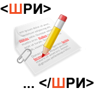
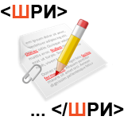

Резюме
Общие вопросы
Фамилия, имя, отчество
Филиппова Виктория ВладимировнаГод рождения
1978Город, в котором живёте
СимферопольВуз, факультет, специальность, кафедра
Таврический национальный университет им. Вернадского, факультет прикладной математики. Специальность: математик, преподаватель информатики, кафедра прикладной математикиГод окончания вуза
2001Уровень владения английским языком
Чтение и понимание технической литературы и документацииЧего вы ожидаете от участия в Школе?
Получить новые знания и расширить имеющиеся, узнать и изучить современные тенденции, методологии разработки веб-сайтов и веб-сервисов, освоить методы и приемы работы в компании Яндекс. Разработка интересных проектов. Получение опыта работы в команде профессионалов.Откуда вы о нас узнали?
По рекомендацииСколько времени вы готовы уделять стажировке или работе в Яндексе?
Время необходимое для изучения и освоения всего материала и получения требуемого конечного результата разработки.
Опыт разработки
Расскажите нам о вашем опыте разработки. Ничего не упускайте: это может быть как серьезный интерфейс, так и просто домашняя страничка.
- Создание статического сайта-визитки для ТЭИ по заданию руководства, затем заинтересовалась веб-разработкой сайтов более глубоко. Стала самостоятельно изучать HTML4/CSS2/ JS и PHP4.
- Разработка пользовательской и административной частей интернет –портала для фирмы Консоль ЛТД, его модернизация и сопровождение. Разработка модуля интернет-магазина. (верстка шаблонов главной и внутренних страниц HTML4/CSS2, JS, разработка собственной CMS на PHP4 под базу данных Oracle).
- Студия интернет-решений Webgraica. Верстка макетов и шаблонов сайтов (HTML/CSS/JS). Разработка сайтов с использованием CMS : ModX, HostCMS и др. Разработка отдельных модулей на PHP4. Поддержка , сопровождение и модернизация различных сайтов разработанных студией. Вот некоторые сайты разработкой которых я занималась: http://stoppassive.com.ua/, http://www.vde.com.ua/, http://nash-krim.com.ua/, www.editorial.in.ua/, http://www.vip-crimea.com/, http://www.nikolaevka-skif.com/ , http://outdoor.biz.ua/, http://www.web-dream.com.ua/ ,http://fleurdecor.com.ua.
Какие языки программирования, фреймворки и технологии вы использовали? Сложились ли у вас личные предпочтения?
Языки: HTML4,PHP4-5,Delphi5-6, JavaScript, CSS2.
JavaScript фреймворки: jQuery, mootols.
Больше нравится заниматься веб-разработками.С какими редакторами и средами разработки вы знакомы? Чем обычно пользуетесь?
Использовала много различных сред разработки и редакторов: Aptana Studio, Komodo Edit, Notepad++, Eclipse, Dreamweaver. Но наиболее удобным и мощным была Aptana, который использовала для большинства проектов и более легкий редактор Кomodo Edit.
С какими ОС приходилось сталкиваться? Для каких целей вы их применяли?
Windows – Разработка веб-сайтов. Разработка различных АPI приложений, в том числе, клиент-серверных на Delphi5 для БД MSSQL2000 и Oracle их внедрение и поддержка. Linux – как пользователь.Приходилось ли вам работать с системами контроля версий? С какими? Какая из них вам нравится больше всего?
Для разработки нескольких веб-проектов использовала svn.Использовали ли вы системы постановки и ведения задач?
нетКакие полезные для фронтенд-разработчика ресурсы вы используете и готовы посоветовать?
jsFiddle.netГде вы работали раньше? Что именно делали? Есть ли у вас опыт работы в команде?
- Таврический экологический институт (2001-2004г.) Разработка, модернизация и сопровождение Windows –приложений для БД, установка ПО
- ООО фирма “Консоль ЛТД” (2004-2009г.) Разработка, модернизация и поддержка веб-сайта фирмы. Разработка Windows-приложений.
- Студия интернет-решений WebGrafica (2009-2010г.) Кроссбраузерная и валидная верстака макетов и шаблонов сайта, разработка сайтов с использованием различных СMS : MODx, HostCMS и др. Есть небольшой опыт работы в команде 2 человка для разработки нескольких веб-сайтов.